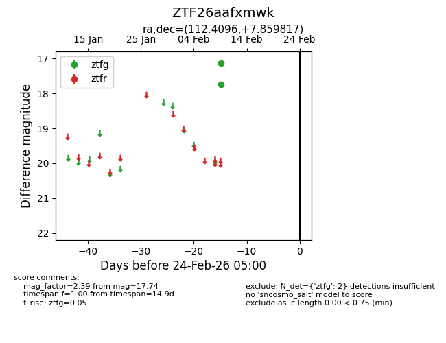
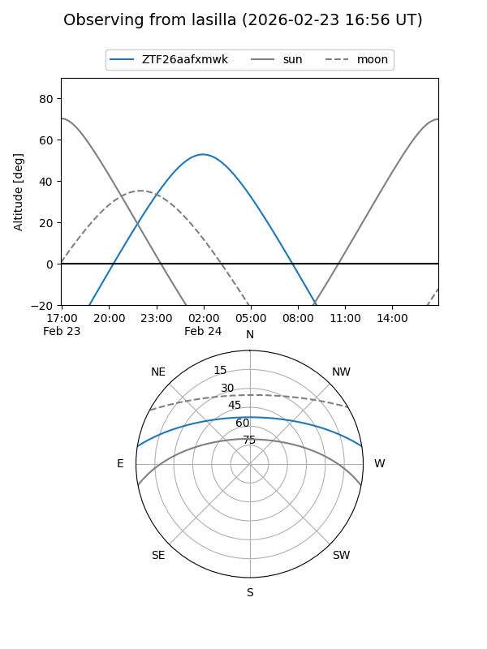
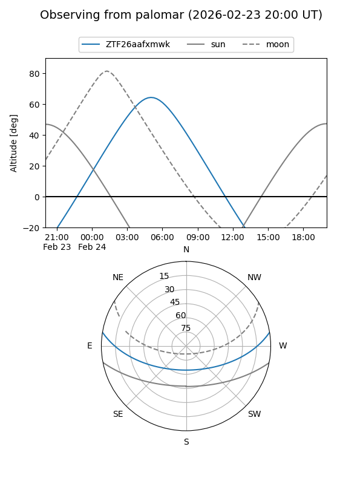

ZTF26aafxmwk
Target ZTF26aafxmwk at 2026-02-24 09:08
Aliases and brokers:
FINK: link
Lasair: link
ALeRCE: link
alt names
ZTF26aafxmwk (ztf,fink_ztf)
Coordinates:
equatorial (ra, dec) = 112.4096,+7.85982
equatorial (HMS+DMS) = 07:29:38.30,+07:51:35.34
galactic (l, b) = (210.1912,+12.04187)
Flags:
Photometry:
last ztfg=17.74
2 ztfg detections
Lightcurve

Visibility


Additional plots